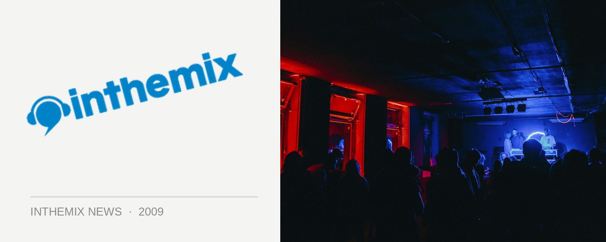

It's party time in the snow during August
Feel like getting out of the city and hitting the slopes, but still keen to squeeze in a bit of nightclubbing action in the evenings? If that’s the case then Jindabyne has a ridiculous amount of stuff happening during the month of August.
Kicking things off, one of the best paces to party in Jindabybe during August will be Banjos, which boasts free entry every night and a raft of high-quality guests like MDX, Jack McCord, Craig Obey and many more, check out the list of excellent gigs below.
Leading dance brand Onelove will also be making the trip to Jindabyne, with a massive event at the Station on August 15th featuring Kid Kenobi with MC Shureshock, Juggernaut DJs and more. All up, there’s bound to be plenty to keep you busy during the evenings as well as during the day this snow season…
Onelove hits The Station in Jindabyne on Saturday August 15th. There’s also free entry to Banjos every night during August, check out some of the key dates below…
Wed 29th & Sat 1st Aug – Craig Obey
Wed 5th & Sat 8th Aug – Jack McCord (Hed Kandi)
Wed 12th & Sat 15th – MDX
Wed 19th & Sat 22nd – SHE feat Graham Cordery
Wed 26th & Sat 29th – Academy feat. Tom Piper, Team Wing & more